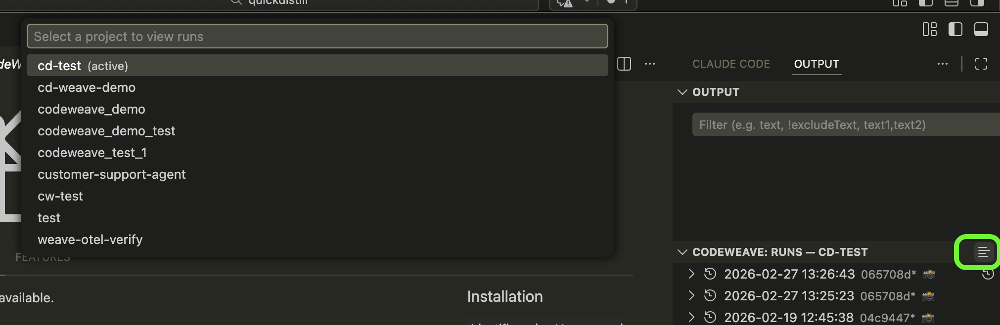
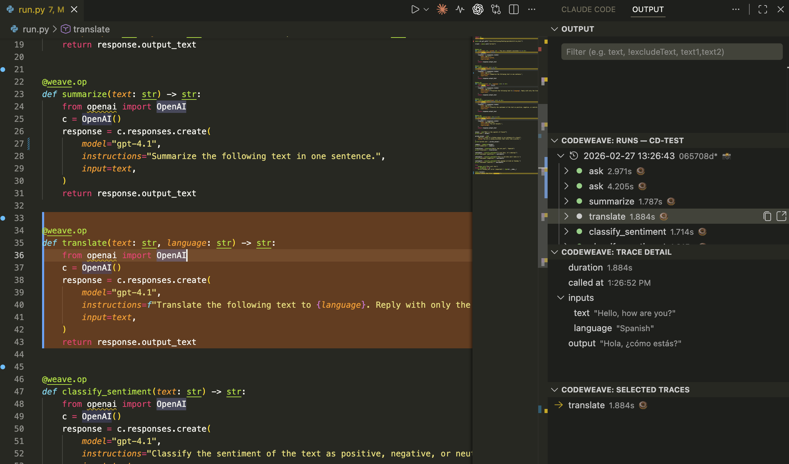

Visualize and restore Weave trace runs inside VSCode
Open VSCode, go to the Extensions panel (⇧⌘X), search CodeWeave, and click Install.
The custom CodeWeave build of Weave is required for the extension to work.
pip install git+https://github.com/bdytx5/codeweave_package.git
Just call weave.init() with a project name — logging is automatic from there.
import weave weave.set_git_path("/path/to/your/repo") # path to your git repo weave.init("my-project") # all LLM calls are logged automatically # ... your code ... weave.finish() # flush & close the run
Git tracking is required to view runs after your code has changed. Without it, the extension can't show you which version of the code a run was recorded with.
Either set it in code before weave.init():
weave.set_git_path("/path/to/your/repo")
Or via environment variable:
export WEAVE_GIT_PATH=/path/to/your/repo
CodeWeave will automatically snapshot your code on every run — including any uncommitted changes — so you can always jump back to the exact code state a trace was run with.
Open the CodeWeave panel in the sidebar. Click the project picker at the top to select your project — all projects with logged runs appear in the dropdown.
Select a project to browse its runs. Each run shows a timestamp and the git commit it was recorded at.
Click any run to expand its calls. Select a call to see inputs, outputs, duration, and the exact line of code it was called from — highlighted live in the editor.
